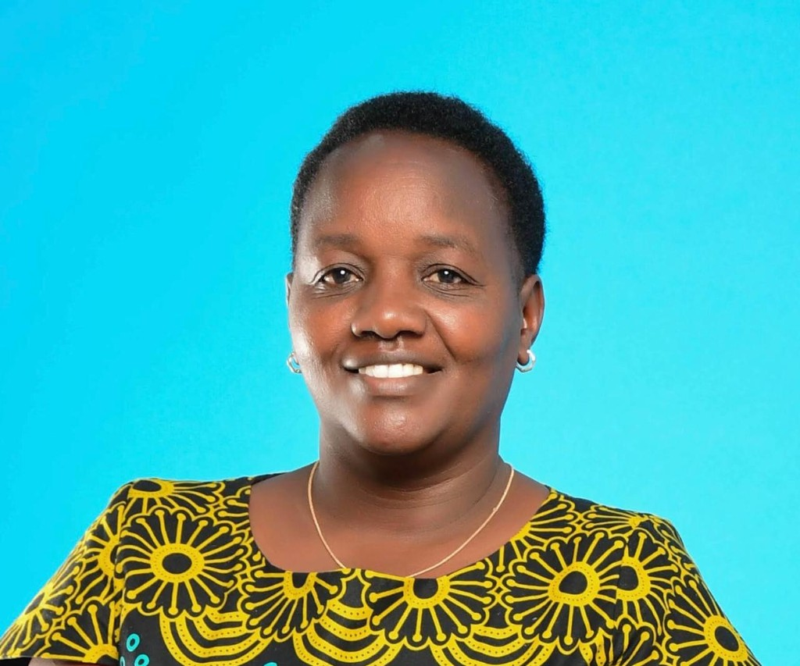

Workforce capacity
Strengthened nutrition and health capacity for over 90% of health workers in West Pokot County.
Ctrl+K to open · Esc to close
No matches. Try a role, county, donor, or skill.
Emergency health & nutrition · Kenya · ASAL programmes
Senior programme manager turning integrated nutrition, health, WASH, and food security responses into measurable outcomes for communities in crisis and resilience contexts.

A concise snapshot of how I work with teams, donors, and county systems.
I am a Senior Emergency Health and Nutrition Programme Manager with over twelve years leading integrated emergency and resilience programmes in Kenya’s ASAL counties, including Baringo and West Pokot.
I currently manage a USG-OFA funded emergency programme with integrated nutrition, health, food security, and WASH components as the nutrition focal at Action Against Hunger, with proven strengths in coordination, IMAM surge, health systems strengthening, RMNCAH-N, nutrition–WASH integration, and donor compliance.
I collaborate with international NGOs and UN partners including UNICEF, USG-OFA, and GAC, and have implemented research initiatives with the International Rescue Committee. I am a registered member of the Kenya Nutritionists and Dietetics Council (KNDI), a trained SMART survey manager, and a certified professional coach.
Outcomes shaped alongside Ministry of Health teams and partners.
Strengthened nutrition and health capacity for over 90% of health workers in West Pokot County.
Supported improvement of nutrition reporting rates from 0.8% (2011) to over 90% in West Pokot.
Co-led establishment of a Gender technical working group with SGBV referral pathway and county ToRs for RMNCH-N.
Initiated Maternity Open Days to boost skilled delivery and ANC attendance; established an operational breastfeeding room at Kapenguria County Referral Hospital.
Progression from technical capacity building to integrated programme leadership.
USG-OFA — Action Against Hunger · Baringo
Action Against Hunger · Baringo County
International Rescue Committee · West Pokot Sub County
Action Against Hunger · West Pokot County
Action Against Hunger
Action Against Hunger International
Eldoret Polytechnic · Moi Teaching & Referral Hospital · Industry
Part-time lecturer (food science modules); clinical nutrition attachment across MCH, diabetic, renal, and stabilization units; earlier dairy technology foundation at Egerton.
Technical depth across the programme cycle — from surge response to learning and adaptation.
Travelling, singing, and a growing interest in sustainable farming — curiosity that keeps me grounded in community realities.
If you are exploring partnerships in emergency nutrition, county health systems, or integrated resilience programming, I would welcome a conversation.
References are available on request from Action Against Hunger and UNICEF colleagues.